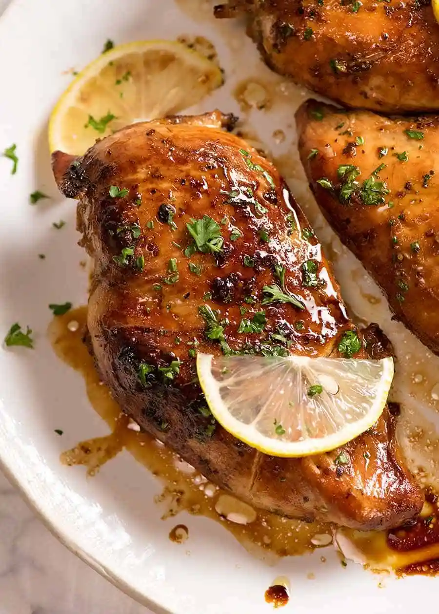

Italian Chicken Marinade

This Italian dressing chicken marinade is a super simple but delicious way to add flavor before grilling.
Simple and delicious - I use half a bottle of Kraft light italian dressing and add minced garlic, cracked black pepper, italian seasoning, oregano, basil, a little white wine, 1/4 c. of olive oil, and a couple of sprigs of fresh rosemary. I put everything into a ziploc bag and let it go. This is great with a salad or over pasta.
Make our most popular chicken today to find out what all the fuss is about!
Ingredients
- Salad dressing
- Garlic powder
- salt
- Chicken breast halves
Steps
- Whisk salad dressing, garlic powder, and salt together in a shallow baking dish; add chicken breasts and turn to coat. Cover the dish with plastic wrap and marinate in the refrigerator, 4 hours to overnight.
- Preheat an outdoor grill for high heat and lightly oil the grate.
- Remove chicken from marinade and shake off excess; discard remaining marinade.
- Cook chicken on the preheated grill until no longer pink in the center and the juices run clear, about 7 to 8 minutes on each side. An instant-read thermometer inserted into the center should read at least 165 degrees F (74 degrees C).